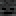

AlchemicalArrows 
Information
AlchemicalArrows allows your players to craft and shoot custom arrows each with their own unique effects and properties. With over 16 unique arrows provided by default, combat becomes immediately diversified upon installation of your plugin. No special materials are required to craft or shoot these arrows, just a single material, a set of arrows and a regular Minecraft Vanilla bow.
This is a perfect plugin for any PvP or PvE servers to spice up the combat and make ranged weaponry more viable and exciting.

Commands
AlchemicalArrows provides administrators with a large variety of in-game commands to give any one of the alchemical arrows or manipulate those that have been shot already by players. All commands are pre-packaged with intelligent tab completion to make its use extremely easy, even if non-default arrows are added by an add-on.
For an in-depth list of all commands and their arguments provided by AlchemicalArrows, visit the official SpigotMC resource page.
Permission Nodes
This plugin aims to be a drag-and-drop solution for most servers whether or not a permission management plugin is installed. While LuckPerms is recommended, by default, all players are able to enjoy this plugin and all the arrows without any additional permissions to be assigned. If you so choose, every aspect of AlchemicalArrows has a permission node including, but not limited to:
- Whether or not an arrow is craftable or shootable
- Every subcommand (including administrative subcommands)
- A special override for WorldGuard protections

Configurable
Last but not least, AlchemicalArrows' configuration is plentiful and detailed to accommodate your server. Change the colours of every arrow, how much damage they inflict and how strong their in-world and entity-based effects will be applied. No matter your server, whether you want to use AlchemicalArrows as a donor perk or just as general availability, it can be configured to fit right in.
For an in-depth list of all configuration options provided by AlchemicalArrows, visit the official SpigotMC resource page.
Default Arrows
| Arrow ID | Description | Crafting Material |
|---|---|---|
alchemicalarrows:air |
Launches damaged entities and players into the air. Passively replenishes nearby entity's air bubbles while underwater. |  Feather Feather |
alchemicalarrows:confusion |
Confusion I and a rotation of 180 degrees is applied to damaged entities and players. Damaged hostile entities lose track of their currently tracked target. |  Poisonous Potato Poisonous Potato |
alchemicalarrows:darkness |
A smoke cloud is generated around damaged entities and players. Blindness I is applied. |  Coal or Coal or  Charcoal Charcoal |
alchemicalarrows:death |
Wither II is applied to damaged entities and players. There is a small chance of instant death on contact. |  Wither Skeleton Skull |
alchemicalarrows:earth |
Burries damaged entities and players into the ground and applies Slowness II. |  Dirt Dirt |
alchemicalarrows:ender |
The shooter and damaged entity will switch positions in the world (including velocities). If a block is hit, the shooter is teleported to the block instead. |  Eye of Ender Eye of Ender |
alchemicalarrows:explosive |
Upon hitting the ground, a fuse is ignited after which point the arrow will explode. This arrow cannot be picked up once shot. |  TNT TNT |
alchemicalarrows:fire |
Ignites damaged entities and players for anywhere between 2 and 5 seconds. |  Fire Charge Fire Charge |
alchemicalarrows:frost |
Freezes damaged entities and prevents them from moving. If the arrow hits a block, nearby water will be temporarily frozen. |  Snowball Snowball |
alchemicalarrows:grapple |
The shooter of the arrow is launched towards the arrow's position once it hits a block. |  Tripwire Hook Tripwire Hook |
alchemicalarrows:life |
Regeneration II is applied to damaged entities and players. No damage is inflicted. Upon hitting the ground, grows flora and fauna in a radius around the arrow. |  Glistering Melon Slice Glistering Melon Slice |
alchemicalarrows:light |
Lightning will strike damaged entities and players. Damaged players are forced to look upwards towards the sun. |  Glowstone Dust Glowstone Dust |
alchemicalarrows:magic |
Damaged entities and players are propelled backwards with great force. |  Blaze Powder Blaze Powder |
alchemicalarrows:magnetic |
Damaged entities and players are propelled towards the shooter. Items in a radius are attracted to this arrow. |  Iron Ingot Iron Ingot |
alchemicalarrows:necrotic |
Hostile creatures in a 50 block radius will begin to target damaged entities or players. A life-stealing effect is also applied to damaged entities and players, the shooter is regenerated as a result. |  Rotten Flesh Rotten Flesh |
alchemicalarrows:water |
The velocity of this arrow is accelerated underwater and is less affected by water pressure and friction. |  Bucket of Water Bucket of Water |
Like AlchemicalArrows? You might also like...
LockSecurity is another plugin made by Choco with a similar set of flexible commands, permissions and configuration options that gives your players the ability to lock their chests and containers with a physical key. Useable as a chest protection plugin where keys can be cloned and shared among friends, or as a server owner trying to design a dungeon. With a plethora of administrative tools and commands, control exactly what you want, how you want, without worrying about those pesky griefers.
Get more information on LockSecurity here!